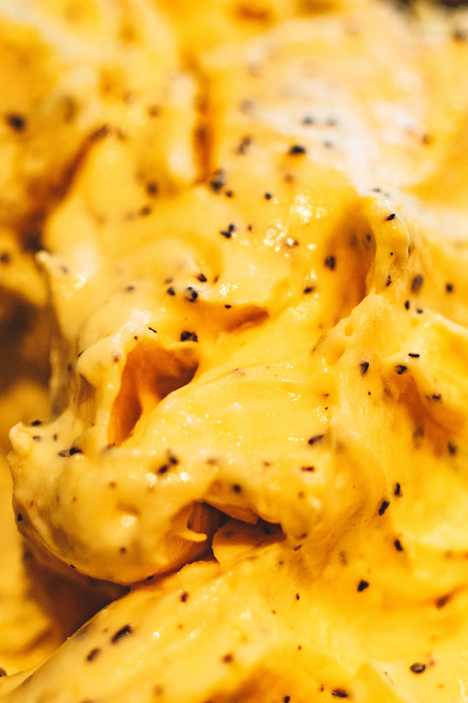

Homemade Mac'n Cheese

Your ultimate guide to delicious homemade mac and cheese!
Have you grown tired of the same old mac and cheese that's missing some flair?
Well fear not friends because this recipe will show you how to make a mac'n cheese dish to be proud of!
All the ingredients can be sourced from your local grocery store... or parents
kitchen pantry. Hey, who are we to judge?
Well, what are you waiting for? Follow along and get that kitchen prepped for the greatest experiment
that has ever graced its counter tops! Make sure there is a fire extenguisher near by too.... Just incase.
Locate these ingredients
- 8 ounces of uncooked elbow macaroni
- 2 cups of shredded sharp Chedar cheese
- 1/2 cup of grated Parmesan cheese
- 3 cups of milk
- 1/4 cup of butter
- 2 1/2 tablespoons of all-purpose flour
- 1/2 cup of bread crumbs
- 1 pinch of paprika
Follow these steps to greatness!
- Cook the macaroni according to the package directions. Then drain.
- In a saucepan, melt butter or margarine over medium heat. Stir in enough flour to make a roux.
Add milk to roux slowly, stirring constantly. Stir in the cheeses, and cook over low heat until the cheese is melted and the sauce is a little thick.
Put the macaroni in a large casserole dish, and pour the sauce over the macaroni. Stir well.
- Melt the butter or margarine in a skillet over medium heat. Add the breadcrumbs and brown.
Spread over the macaroni and cheese to cover. Sprinkle with a little paprika.
- Bake at 350 degrees F (175 degrees C) for 30 minutes. Then enjoy your wonderful work of art!